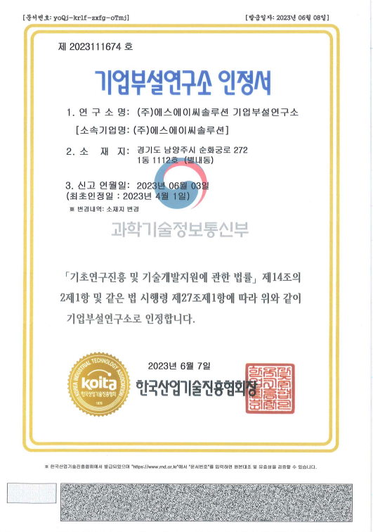
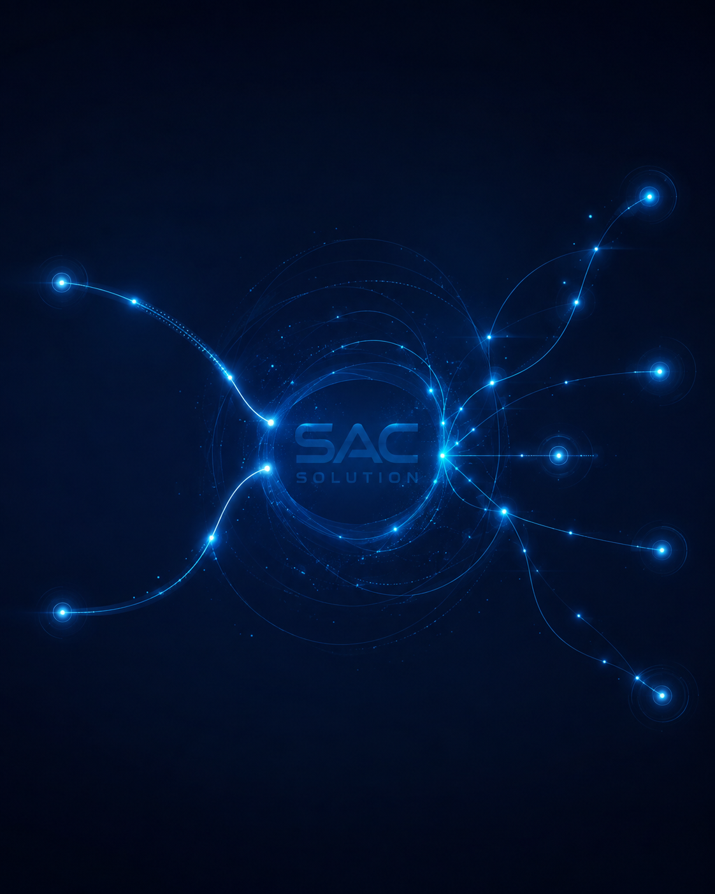
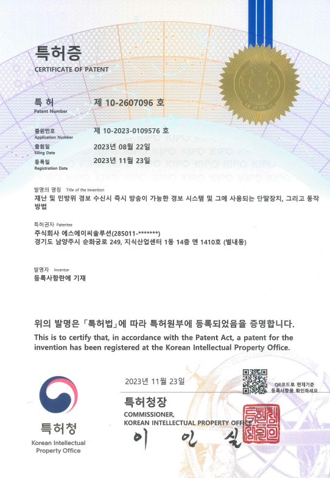
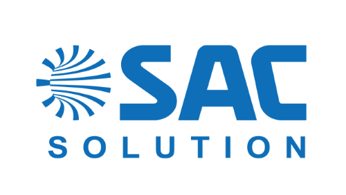

ABOUT
Connect with technology, complete with trust
Who We Are
안전과 일상을 연결하는
방송통신 솔루션 기업
에스에이씨솔루션은 재난 및 안전 설비, 방송·문화 설비, 시스템 통합과 스마트 통신 인프라를 제공합니다. 소프트웨어와 하드웨어를 아우르는 기술력으로 현장의 문제를 해결합니다.
지속적인 연구개발과 책임 있는 시공을 통해 고객이 신뢰할 수 있는 시스템, 사회의 안전에 기여하는 기술을 만들어 가겠습니다.
사업 분야 확인하기
Technology & Certification
연구개발로 만드는
신뢰할 수 있는 기술
기업부설연구소를 기반으로 재난·민방위 경보와 방송 시스템의 신속성, 안정성, 연동성을 높이는 기술을 연구합니다.

REGISTERED PATENT
재난·민방위 경보 시스템 특허
재난 및 민방위 경보 수신 시 즉시 방송이 가능한 경보 시스템
특허 제10-2607096호 · 2023년 11월
Core Technology
에스에이씨솔루션의 보유 기술
재난경보 즉시 방송
경보 수신과 동시에 내장 앰프와 우선방송 스피커를 구동해 초기 안내 지연을 최소화합니다.
표준 경보 프로토콜 수신
이더넷과 LTE 등 유무선 통신을 통해 재난·민방위 표준 경보 정보를 수신합니다.
전관방송 자동 연동
기존 전관방송 설비가 기동되면 경보 단말기의 임시 방송에서 전관방송으로 자동 전환합니다.
스피커 회선 이중화
우선방송 회선 이상을 감지하고 보조 회선으로 전환해 비상방송의 연속성을 확보합니다.
설비 상태 모니터링
앰프 출력과 스피커 선로 상태를 상시 감시하고 이상 발생 시 관리자에게 상태를 알립니다.
통합 시스템 설계
재난경보, CCTV, 방송, 네트워크와 통합상황실을 현장 환경에 맞춰 설계하고 연동합니다.
Our History
축적된 경험 위에
새로운 기술을 더합니다
2024
기술 특허 등록
등록특허 제10-2689842호 취득
2023
연구개발 기반 강화
기업부설연구소 인정, 본사 공장 등록 및 재난경보 관련 특허 등록
2022
사업 기반 확장
정보통신공사업 면허 취득, 소프트웨어사업자 및 여성기업 확인
2012
에스에이씨솔루션 설립
방송·AV 및 정보통신 시스템 사업 시작

Corporate Identity
연결과 신뢰를 상징하는
SAC Blue
SAC는 Smart AI Communication의 의미를 담고 있습니다. 선명한 블루는 전문 기술과 신뢰, 더 안전한 미래를 향한 비전을 표현합니다.
SAC BLUE
#0E6EB8 · RGB 14 / 110 / 184
#0E6EB8 · RGB 14 / 110 / 184